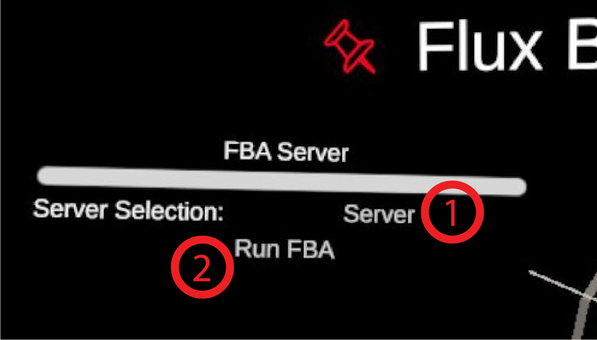
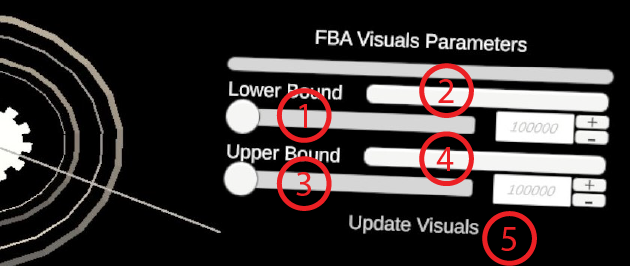

Flux Balance Analysis (FBA)
Requires a connection to answer_talker.

This is the module to request a flux balance analysis for the model currently imported.
The Server Parameters pannel:
- Input Field Data Server IP. The IP address at which answer_talker is hosted. Default value is 127.0.0.1 but this only works during development if answer_talker is hosted on the same machine as the one we are developping ECellDive on.
- Input Field Data Server Port. The Port at which answer_talker is listening. Default value is 8000. This is also the default value when launching answer_talker so, unless you specified a port at that time, you can leave the field empty in ECellDive.
- Button Run FBA. Will try to perform the FBA calculations while taking into account the reactions that may have been knocked out in the loaded model. It typically takes a few seconds before being able to see the result of the FBA. During this time, the module will be animated. If the query is successful, the module will flash green; the size of the edges of the metabolic network will be updated. If the query fails, the module will flash red. In that case, you can check the error message in the log.
The FBA Visuals Parameters pannel:
- Slider Lower Bound. The global value used to clamp the small flux values. If a reaction's flux value is lower than the lower bound, then the lower bound value will be used when updating the visuals of the reaction edge. This makes every reaction visually identical when their flux value is lower than the lower bound.
- Color Button Lower Bound. The button used to set the color corresponding to the lower bound for the color gradient going from the lower bound to the upper bound.
- Slider Upper Bound. The global value used to clamp the big flux values. If a reaction's flux value is greater than the upper bound, then the upper bound value will be used when updating the visuals of the reaction edge. This makes every reaction visually identical when their flux value is greater than the upper bound.
- Color Button Lower Bound. The button used to set the color corresponding to the lower bound for the color gradient going from the lower bound to the upper bound.
- Button Update Visuals. Updates the visuals of every reaction edge according to the setting that were just defined. This is local, there is no connection to answer_talker involved so the update should be fast.